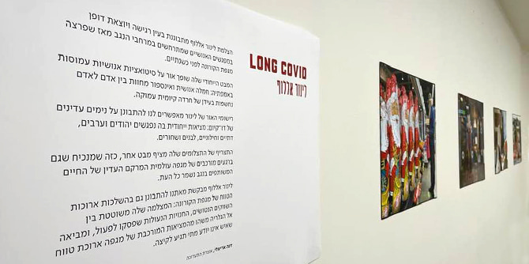
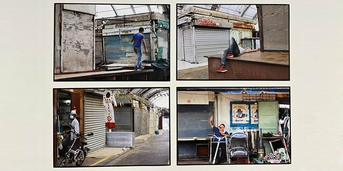

צילום: מרכז מנדל למנהיגות בנגב
ב-28 בדצמבר פתחנו תערוכה מתצלומיה של
לינור אללוף, בוגרת תוכנית מנדל למנהיגות תרבות בנגב, מחזור ג׳. בחייה המקצועיים לינור היא דוברת מחוז דרום בקופת חולים כללית, ובמסגרת זו הזדמן לה לא אחת להשתתף במפגשים אנושיים רגישים שהתקיימו במרחב הנגב מאז פרוץ הקורונה, ולתעד אותם.
בצילומיה מתבוננת לינור בעין רגישה ויוצאת דופן במפגשים האנושיים המתרחשים במרחבי הנגב בשנתיים האחרונות, מאז שפרצה המגפה. מבטה הייחודי שופך אור על סיטואציות אנושיות עמוסות באמפתיה: חמלה אנושית ואינספור מחוות בין אדם לאדם, הנחשפות בעידן של חרדה קיומית עמוקה שאיש אינו יודע מתי יגיע אל קצו.

צילום: מרכז מנדל למנהיגות בנגב
רישומי האור של לינור מאפשרים לנו להתבונן בנימים עדינים של דו-קיום: מציאות ייחודית שבה נפגשים יהודים וערבים, דתיים וחילונים, לבנים ושחורים. התצרף של צילומיה שלה מציף מבט אחר, כזה שמנכיח את העובדה שגם ברגעים מורכבים של מגפה עולמית, המרקם העדין של החיים המשותפים בנגב נשמר כל העת.
דרך צילומיה, המשוטטים בין השווקים הנטושים, ששלטי ״נא לעטות מסיכה״ כה מאפיינים אותם, והחנויות הנעולות שפסקו לפעול, לינור מבקשת מאתנו להתבונן גם בהשלכות ארוכות הטווח של מגפת הקורונה.
את התערוכה אצרה
פרופ' דנה אריאלי, חברת סגל מרכז מנדל למנהיגות בנגב, ובפתיחתה נשאו דברים
ישראל שורק, חבר סגל מרכז מנדל למנהיגות בנגב,
חדווה אמונה, מנהלת מחוז דרום בקופת חולים כללית ובוגרת תוכנית מנדל למנהיגות אזורית בבאר שבע מחזור ב׳, וכמובן לינור עצמה. התערוכה תוצג במרכז מנדל למנהיגות בנגב עד חודש מרס, ואתם מוזמנים לבוא, להתרגש ולהתרשם. בשל מגבלות הקורונה, הביקור בתערוכה – בתיאום מראש.
צילום: מרכז מנדל למנהיגות בנגב
{kind=link}
{kind=link}
{kind=link}
{kind=link}